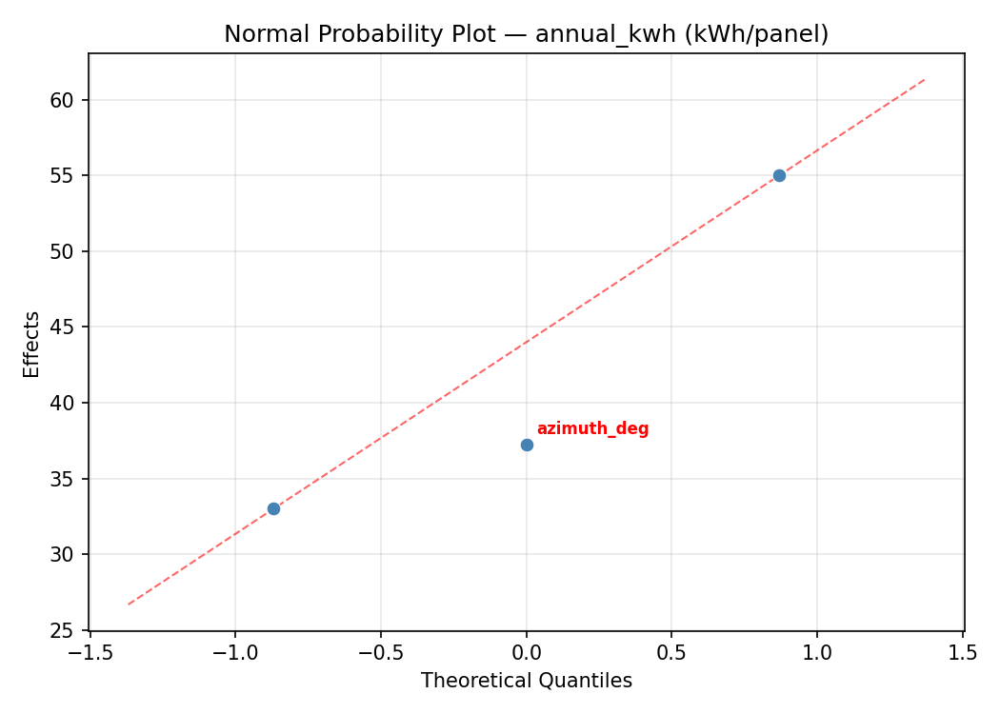
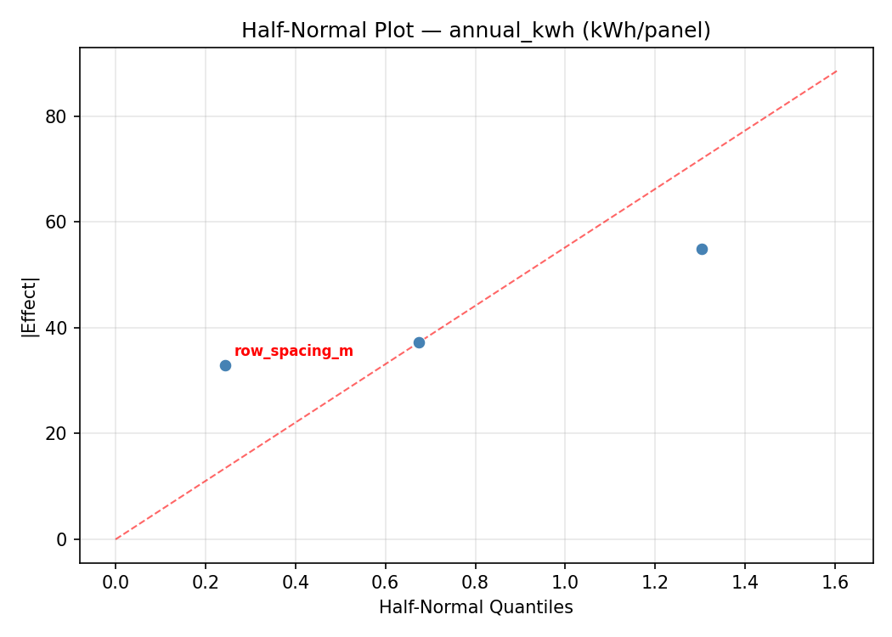
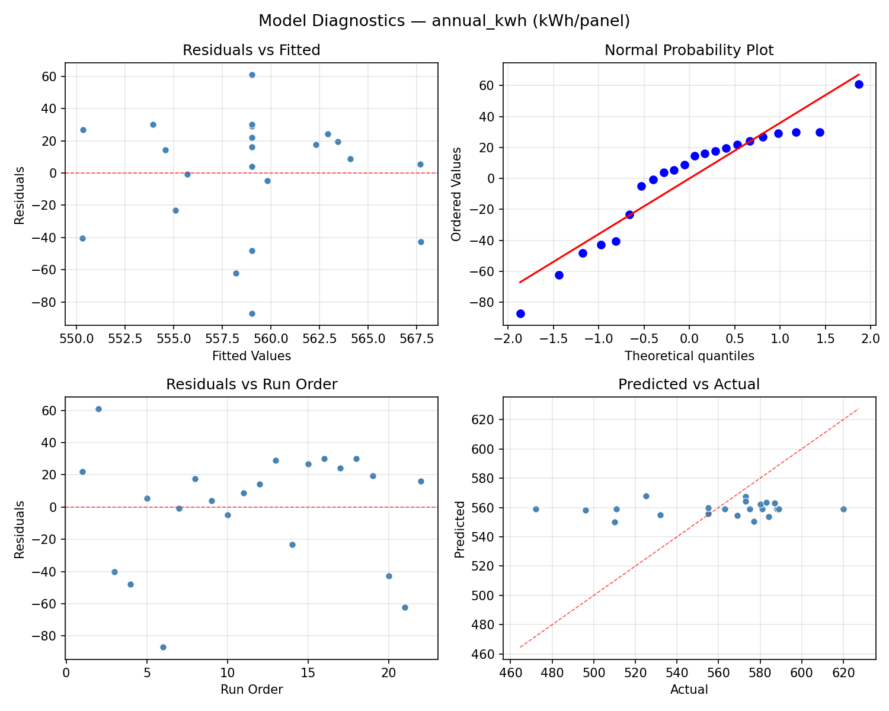
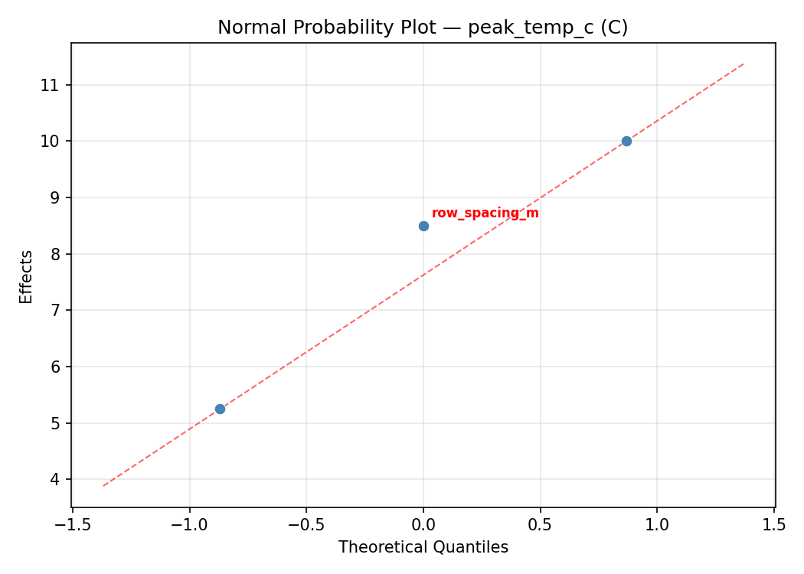
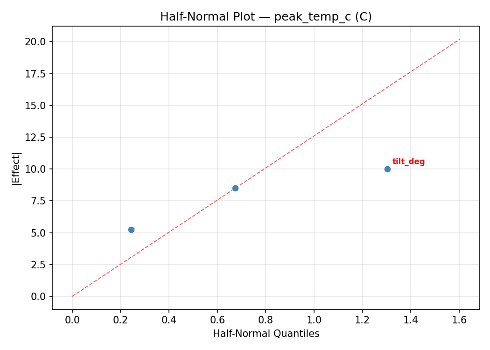
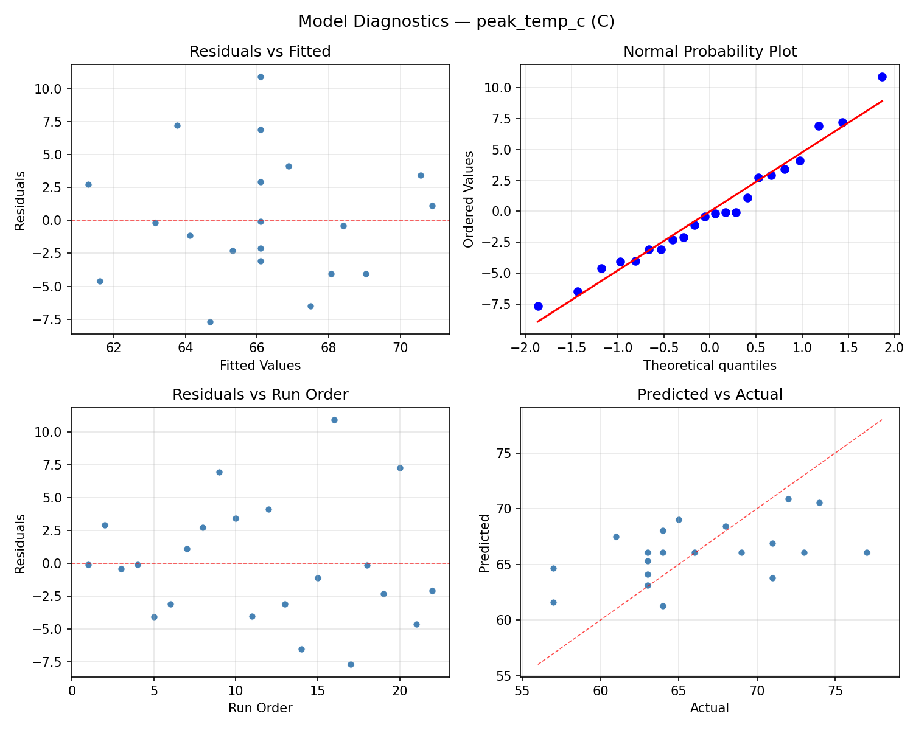

Summary
This experiment investigates solar panel tilt & orientation. Central composite design to maximize annual energy yield and minimize peak temperature by tuning tilt angle, azimuth, and row spacing.
The design varies 3 factors: tilt deg (deg), ranging from 10 to 50, azimuth deg (deg), ranging from 150 to 210, and row spacing m (m), ranging from 1.5 to 4.0. The goal is to optimize 2 responses: annual kwh (kWh/panel) (maximize) and peak temp c (C) (minimize). Fixed conditions held constant across all runs include latitude = 40N, panel watt = 400W.
A Central Composite Design (CCD) was selected to fit a full quadratic response surface model, including curvature and interaction effects. With 3 factors this produces 22 runs including center points and axial (star) points that extend beyond the factorial range.
Quadratic response surface models were fitted to capture potential curvature and factor interactions. The RSM contour plots below visualize how pairs of factors jointly affect each response.
Key Findings
For annual kwh, the most influential factors were azimuth deg (55.2%), tilt deg (23.4%), row spacing m (21.4%). The best observed value was 620.0 (at tilt deg = 30, azimuth deg = 180, row spacing m = 2.75).
For peak temp c, the most influential factors were tilt deg (51.9%), azimuth deg (25.9%), row spacing m (22.2%). The best observed value was 57.0 (at tilt deg = 50, azimuth deg = 210, row spacing m = 1.5).
Recommended Next Steps
- Run confirmation experiments at the predicted optimal settings to validate the model.
- Consider whether any fixed factors should be varied in a future study.
Experimental Setup
Factors
| Factor | Low | High | Unit |
|---|
tilt_deg | 10 | 50 | deg |
azimuth_deg | 150 | 210 | deg |
row_spacing_m | 1.5 | 4.0 | m |
Fixed: latitude = 40N, panel_watt = 400W
Responses
| Response | Direction | Unit |
|---|
annual_kwh | ↑ maximize | kWh/panel |
peak_temp_c | ↓ minimize | C |
Configuration
{
"metadata": {
"name": "Solar Panel Tilt & Orientation",
"description": "Central composite design to maximize annual energy yield and minimize peak temperature by tuning tilt angle, azimuth, and row spacing"
},
"factors": [
{
"name": "tilt_deg",
"levels": [
"10",
"50"
],
"type": "continuous",
"unit": "deg"
},
{
"name": "azimuth_deg",
"levels": [
"150",
"210"
],
"type": "continuous",
"unit": "deg"
},
{
"name": "row_spacing_m",
"levels": [
"1.5",
"4.0"
],
"type": "continuous",
"unit": "m"
}
],
"fixed_factors": {
"latitude": "40N",
"panel_watt": "400W"
},
"responses": [
{
"name": "annual_kwh",
"optimize": "maximize",
"unit": "kWh/panel"
},
{
"name": "peak_temp_c",
"optimize": "minimize",
"unit": "C"
}
],
"settings": {
"operation": "central_composite",
"test_script": "use_cases/127_solar_panel_tilt/sim.sh"
}
}
Experimental Matrix
The Central Composite Design produces 22 runs. Each row is one experiment with specific factor settings.
| Run | tilt_deg | azimuth_deg | row_spacing_m |
|---|
| 1 | 30 | 180 | 2.75 |
| 2 | 50 | 150 | 4 |
| 3 | 10 | 210 | 1.5 |
| 4 | 30 | 234.772 | 2.75 |
| 5 | 30 | 180 | 2.75 |
| 6 | -6.51484 | 180 | 2.75 |
| 7 | 30 | 180 | 0.467823 |
| 8 | 30 | 180 | 2.75 |
| 9 | 50 | 210 | 1.5 |
| 10 | 66.5148 | 180 | 2.75 |
| 11 | 30 | 180 | 2.75 |
| 12 | 30 | 125.228 | 2.75 |
| 13 | 30 | 180 | 2.75 |
| 14 | 10 | 150 | 4 |
| 15 | 30 | 180 | 2.75 |
| 16 | 50 | 150 | 1.5 |
| 17 | 30 | 180 | 5.03218 |
| 18 | 50 | 210 | 4 |
| 19 | 30 | 180 | 2.75 |
| 20 | 10 | 150 | 1.5 |
| 21 | 10 | 210 | 4 |
| 22 | 30 | 180 | 2.75 |
Step-by-Step Workflow
1
Preview the design
$ python doe.py info --config use_cases/127_solar_panel_tilt/config.json
2
Generate the runner script
$ python doe.py generate --config use_cases/127_solar_panel_tilt/config.json \
--output use_cases/127_solar_panel_tilt/results/run.sh --seed 42
3
Execute the experiments
$ bash use_cases/127_solar_panel_tilt/results/run.sh
4
Analyze results
$ python doe.py analyze --config use_cases/127_solar_panel_tilt/config.json
5
Get optimization recommendations
$ python doe.py optimize --config use_cases/127_solar_panel_tilt/config.json
6
Multi-objective optimization
With 2 competing responses, use --multi to find the best compromise via Derringer–Suich desirability.
$ python doe.py optimize --config use_cases/127_solar_panel_tilt/config.json --multi
7
Generate the HTML report
$ python doe.py report --config use_cases/127_solar_panel_tilt/config.json \
--output use_cases/127_solar_panel_tilt/results/report.html
Features Exercised
| Feature | Value |
|---|
| Design type | central_composite |
| Factor types | continuous (all 3) |
| Arg style | double-dash |
| Responses | 2 (annual_kwh ↑, peak_temp_c ↓) |
| Total runs | 22 |
Analysis Results
Generated from actual experiment runs using the DOE Helper Tool.
Response: annual_kwh
Top factors: azimuth_deg (55.2%), tilt_deg (23.4%), row_spacing_m (21.4%).
ANOVA
| Source | DF | SS | MS | F | p-value |
|---|
| Source | DF | SS | MS | F | p-value |
| tilt_deg | 4 | 7330.5833 | 1832.6458 | 1.555 | 0.2669 |
| azimuth_deg | 4 | 9501.3333 | 2375.3333 | 2.016 | 0.1758 |
| row_spacing_m | 4 | 5519.3333 | 1379.8333 | 1.171 | 0.3856 |
| Lack | of | Fit | 2 | 0.0000 | 0.0000 |
| Pure | Error | 7 | 8249.5000 | | |
| Error | 9 | 5268.7500 | 1178.5000 | | |
| Total | 21 | 27620.0000 | 1315.2381 | | |
Pareto Chart

Main Effects Plot

Normal Probability Plot of Effects

Half-Normal Plot of Effects

Model Diagnostics

Response: peak_temp_c
Top factors: tilt_deg (51.9%), azimuth_deg (25.9%), row_spacing_m (22.2%).
ANOVA
| Source | DF | SS | MS | F | p-value |
|---|
| Source | DF | SS | MS | F | p-value |
| tilt_deg | 4 | 175.3182 | 43.8295 | 1.088 | 0.4179 |
| azimuth_deg | 4 | 54.1515 | 13.5379 | 0.336 | 0.8470 |
| row_spacing_m | 4 | 50.9015 | 12.7254 | 0.316 | 0.8603 |
| Lack | of | Fit | 2 | 15.5720 | 7.7860 |
| Pure | Error | 7 | 281.8750 | | |
| Error | 9 | 297.4470 | 40.2679 | | |
| Total | 21 | 577.8182 | 27.5152 | | |
Pareto Chart

Main Effects Plot

Normal Probability Plot of Effects

Half-Normal Plot of Effects

Model Diagnostics

Response Surface Plots
3D surfaces fitted with quadratic RSM. Red dots are observed data points.
annual kwh azimuth deg vs row spacing m

annual kwh tilt deg vs azimuth deg

annual kwh tilt deg vs row spacing m

peak temp c azimuth deg vs row spacing m

peak temp c tilt deg vs azimuth deg

peak temp c tilt deg vs row spacing m

Multi-Objective Optimization
When responses compete, Derringer–Suich desirability finds the best compromise.
Each response is scaled to a 0–1 desirability, then combined via a weighted geometric mean.
Overall Desirability
D = 0.8272
Per-Response Desirability
| Response | Weight | Desirability | Predicted | Dir |
|---|
annual_kwh |
1.5 |
|
587.00 0.7518 587.00 kWh/panel |
↑ |
peak_temp_c |
1.0 |
|
57.00 0.9545 57.00 C |
↓ |
Recommended Settings
| Factor | Value |
|---|
tilt_deg | 30 deg |
azimuth_deg | 180 deg |
row_spacing_m | 5.03218 m |
Source: from observed run #17
Trade-off Summary
Sacrifice = how much worse than single-objective best.
| Response | Predicted | Best Observed | Sacrifice |
|---|
peak_temp_c | 57.00 | 57.00 | +0.00 |
Top 3 Runs by Desirability
| Run | D | Factor Settings |
|---|
| #13 | 0.7265 | tilt_deg=66.5148, azimuth_deg=180, row_spacing_m=2.75 |
| #18 | 0.7123 | tilt_deg=30, azimuth_deg=180, row_spacing_m=2.75 |
Model Quality
| Response | R² | Type |
|---|
peak_temp_c | 0.1558 | linear |
Full Multi-Objective Output
============================================================
MULTI-OBJECTIVE OPTIMIZATION
Method: Derringer-Suich Desirability Function
============================================================
Overall desirability: D = 0.8272
Response Weight Desirability Predicted Direction
---------------------------------------------------------------------
annual_kwh 1.5 0.7518 587.00 kWh/panel ↑
peak_temp_c 1.0 0.9545 57.00 C ↓
Recommended settings:
tilt_deg = 30 deg
azimuth_deg = 180 deg
row_spacing_m = 5.03218 m
(from observed run #17)
Trade-off summary:
annual_kwh: 587.00 (best observed: 620.00, sacrifice: +33.00)
peak_temp_c: 57.00 (best observed: 57.00, sacrifice: +0.00)
Model quality:
annual_kwh: R² = 0.0953 (linear)
peak_temp_c: R² = 0.1558 (linear)
Top 3 observed runs by overall desirability:
1. Run #17 (D=0.8272): tilt_deg=30, azimuth_deg=180, row_spacing_m=5.03218
2. Run #13 (D=0.7265): tilt_deg=66.5148, azimuth_deg=180, row_spacing_m=2.75
3. Run #18 (D=0.7123): tilt_deg=30, azimuth_deg=180, row_spacing_m=2.75
Full Analysis Output
=== Main Effects: annual_kwh ===
Factor Effect Std Error % Contribution
--------------------------------------------------------------
azimuth_deg 101.2500 7.7320 55.2%
tilt_deg 42.8333 7.7320 23.4%
row_spacing_m 39.3333 7.7320 21.4%
=== ANOVA Table: annual_kwh ===
Source DF SS MS F p-value
-----------------------------------------------------------------------------
tilt_deg 4 7330.5833 1832.6458 1.555 0.2669
azimuth_deg 4 9501.3333 2375.3333 2.016 0.1758
row_spacing_m 4 5519.3333 1379.8333 1.171 0.3856
Lack of Fit 2 0.0000 0.0000 0.000 1.0000
Pure Error 7 8249.5000 1178.5000
Error 9 5268.7500 1178.5000
Total 21 27620.0000 1315.2381
=== Summary Statistics: annual_kwh ===
tilt_deg:
Level N Mean Std Min Max
------------------------------------------------------------
-6.51484 1 589.0000 0.0000 589.0000 589.0000
10 4 588.5000 21.9773 569.0000 620.0000
30 12 546.1667 38.2619 472.0000 587.0000
50 4 553.2500 30.2035 510.0000 575.0000
66.5148 1 588.0000 0.0000 588.0000 588.0000
azimuth_deg:
Level N Mean Std Min Max
------------------------------------------------------------
125.228 1 532.0000 0.0000 532.0000 532.0000
150 4 568.5000 45.1553 510.0000 620.0000
180 12 560.5833 32.3235 496.0000 589.0000
210 4 573.2500 13.0224 555.0000 584.0000
234.772 1 472.0000 0.0000 472.0000 472.0000
row_spacing_m:
Level N Mean Std Min Max
------------------------------------------------------------
0.467823 1 573.0000 0.0000 573.0000 573.0000
1.5 4 587.2500 22.0964 573.0000 620.0000
2.75 12 547.9167 39.9715 472.0000 589.0000
4 4 554.5000 31.9427 510.0000 584.0000
5.03218 1 583.0000 0.0000 583.0000 583.0000
=== Main Effects: peak_temp_c ===
Factor Effect Std Error % Contribution
--------------------------------------------------------------
tilt_deg 14.0000 1.1183 51.9%
azimuth_deg 7.0000 1.1183 25.9%
row_spacing_m 6.0000 1.1183 22.2%
=== ANOVA Table: peak_temp_c ===
Source DF SS MS F p-value
-----------------------------------------------------------------------------
tilt_deg 4 175.3182 43.8295 1.088 0.4179
azimuth_deg 4 54.1515 13.5379 0.336 0.8470
row_spacing_m 4 50.9015 12.7254 0.316 0.8603
Lack of Fit 2 15.5720 7.7860 0.193 0.8284
Pure Error 7 281.8750 40.2679
Error 9 297.4470 40.2679
Total 21 577.8182 27.5152
=== Summary Statistics: peak_temp_c ===
tilt_deg:
Level N Mean Std Min Max
------------------------------------------------------------
-6.51484 1 77.0000 0.0000 77.0000 77.0000
10 4 67.2500 3.5000 63.0000 71.0000
30 12 64.5000 5.2657 57.0000 73.0000
50 4 67.7500 4.5000 64.0000 74.0000
66.5148 1 63.0000 0.0000 63.0000 63.0000
azimuth_deg:
Level N Mean Std Min Max
------------------------------------------------------------
125.228 1 61.0000 0.0000 61.0000 61.0000
150 4 68.0000 2.9439 64.0000 71.0000
180 12 65.8333 6.2353 57.0000 77.0000
210 4 67.0000 4.8305 63.0000 74.0000
234.772 1 63.0000 0.0000 63.0000 63.0000
row_spacing_m:
Level N Mean Std Min Max
------------------------------------------------------------
0.467823 1 64.0000 0.0000 64.0000 64.0000
1.5 4 66.0000 2.1602 64.0000 69.0000
2.75 12 65.5833 6.3741 57.0000 77.0000
4 4 69.0000 4.6904 63.0000 74.0000
5.03218 1 63.0000 0.0000 63.0000 63.0000
Optimization Recommendations
=== Optimization: annual_kwh ===
Direction: maximize
Best observed run: #2
tilt_deg = 30
azimuth_deg = 180
row_spacing_m = 2.75
Value: 620.0
RSM Model (linear, R² = 0.1926, Adj R² = 0.0581):
Coefficients:
intercept +559.0000
tilt_deg +17.0206
azimuth_deg +5.9276
row_spacing_m +6.1601
RSM Model (quadratic, R² = 0.4678, Adj R² = 0.0687):
Coefficients:
intercept +566.8158
tilt_deg +17.0206
azimuth_deg +5.9276
row_spacing_m +6.1601
tilt_deg*azimuth_deg +9.5000
tilt_deg*row_spacing_m -19.2500
azimuth_deg*row_spacing_m +11.0000
tilt_deg^2 -6.0079
azimuth_deg^2 -9.6080
row_spacing_m^2 +3.8921
Curvature analysis:
azimuth_deg coef=-9.6080 concave (has a maximum)
tilt_deg coef=-6.0079 concave (has a maximum)
row_spacing_m coef=+3.8921 convex (has a minimum)
Notable interactions:
tilt_deg*row_spacing_m coef=-19.2500 (antagonistic)
azimuth_deg*row_spacing_m coef=+11.0000 (synergistic)
tilt_deg*azimuth_deg coef=+9.5000 (synergistic)
Predicted optimum (from quadratic model, at observed points):
tilt_deg = 30
azimuth_deg = 180
row_spacing_m = 5.03218
Predicted value: 591.0363
Surface optimum (via L-BFGS-B, quadratic model):
tilt_deg = 50
azimuth_deg = 186.912
row_spacing_m = 1.5
Predicted value: 595.3206
Model quality: Weak fit — consider adding center points or using a different design.
Factor importance:
1. azimuth_deg (effect: 55.5, contribution: 38.1%)
2. tilt_deg (effect: 48.5, contribution: 33.3%)
3. row_spacing_m (effect: 41.5, contribution: 28.5%)
=== Optimization: peak_temp_c ===
Direction: minimize
Best observed run: #17
tilt_deg = 50
azimuth_deg = 210
row_spacing_m = 1.5
Value: 57.0
RSM Model (linear, R² = 0.1820, Adj R² = 0.0456):
Coefficients:
intercept +66.0909
tilt_deg -1.0759
azimuth_deg -0.6968
row_spacing_m +2.3507
RSM Model (quadratic, R² = 0.3029, Adj R² = -0.2199):
Coefficients:
intercept +66.3935
tilt_deg -1.0759
azimuth_deg -0.6968
row_spacing_m +2.3507
tilt_deg*azimuth_deg -1.6250
tilt_deg*row_spacing_m +0.3750
azimuth_deg*row_spacing_m -1.6250
tilt_deg^2 -0.0513
azimuth_deg^2 +0.5487
row_spacing_m^2 -0.9513
Curvature analysis:
row_spacing_m coef=-0.9513 concave (has a maximum)
azimuth_deg coef=+0.5487 convex (has a minimum)
tilt_deg coef=-0.0513 negligible curvature
Notable interactions:
azimuth_deg*row_spacing_m coef=-1.6250 (antagonistic)
tilt_deg*azimuth_deg coef=-1.6250 (antagonistic)
tilt_deg*row_spacing_m coef=+0.3750 (synergistic)
Predicted optimum (from linear model, at observed points):
tilt_deg = 30
azimuth_deg = 180
row_spacing_m = 5.03218
Predicted value: 70.3827
Surface optimum (via L-BFGS-B, linear model):
tilt_deg = 50
azimuth_deg = 210
row_spacing_m = 1.5
Predicted value: 61.9675
Model quality: Weak fit — consider adding center points or using a different design.
Factor importance:
1. azimuth_deg (effect: 11.0, contribution: 43.6%)
2. row_spacing_m (effect: 7.2, contribution: 28.7%)
3. tilt_deg (effect: 7.0, contribution: 27.7%)